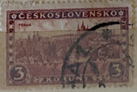
| SOURCE | TITLE| IMAGE MATCH | click to source page |
| Stampedia | CZECHOSLOVAKIA 1926 3 koruna Definitive Stamps, 1926-series | Hradcany at Prague | 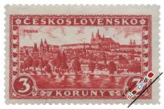 |
| Find Your Stamps Value | Value of ceskoslovensko 3 koruny stamps | 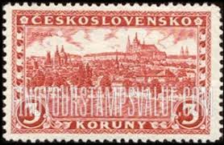 |
| eBay | Czechoslovakia - 1957 The 40th Anniversary of Russian Revolution | eBay | 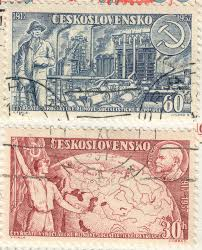 |
| eBay | Used Czech & Czechoslovakian Stamp Blocks for sale | eBay | 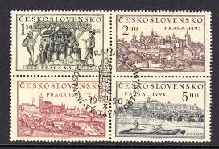 |
| Colnect | Stamp: Brno (Czechoslovakia(International Tourism Year 1967) Mi:CS 1678,Sn:CS 1444,Yt:CS 1540,Sg:CS 1629,AFA:CS 1523,POF:CS 1584 📮 | 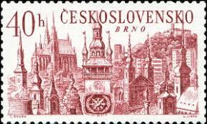 |
| Shutterstock | Prague Stamps: Over 1,923 Royalty-Free Licensable Stock Photos | Shutterstock | 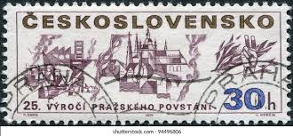 |
| Shutterstock | Czechoslovakia Circa 1962 Stamp Printed Czechoslovakia Stock Photo 96057071 | Shutterstock | 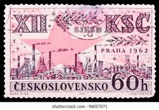 |
| Poppe Stamps | Poppe Stamps: Czechoslovakia, 1934, 329, Anniversary, Soldiers, Heraldic, Anniversary, Soldiers, Heraldic - stamps for sale by theme and country | 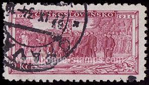 |
| eBay | Czech Republic and Czechoslovakia Communication Stamps for sale | eBay | 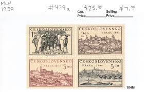 |
| Alamy | CZECHOSLOVAKIA - CIRCA 1934: a stamp printed in the Czechoslovakia shows Consecration of Legion Colors at Kiev, circa 1934 Stock Photo - Alamy | 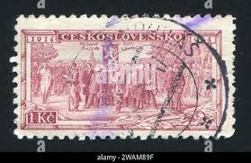 |
| Dreamstime.com | Legion Receiving Battle Flag at Bayonne, 20th Anniversary of Legion Which Fought in WWI, 1914-1934 Editorial Stock Photo - Image of letter, philately: 212224313 | 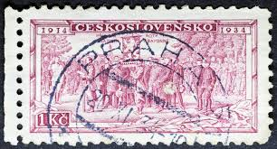 |
| eBay UK | 4 Number Czech & Czechoslovakian Stamps for sale | eBay UK | 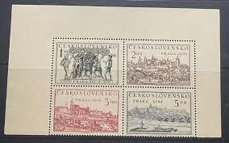 |
| The Philately | Czechoslovakia 1981 Mi 2612-2613 Czechoslovak Communist Party Sc 2360-2361 for sale at The Philately | 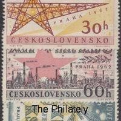 |
| eBay | Czechoslovakia - 1942 - 20 Korun - "aUNC+" #CO7187 | eBay | 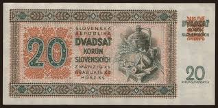 |
| Alamy | Czechoslovakia communism poster hi-res stock photography and images - Alamy | 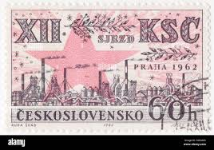 |
| worldbanknotescoins.com | World Banknotes & Coins Pictures | Old Money, Foreign Currency Notes, World Paper Money Museum: Czechoslovakian currency 50 Czech Korun banknote 1929 Jaroslava Mucha as Slavia | 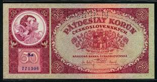 |
| eBay | Travelstamps: Czechoslovakia Stamps Scott #1443-1444 30h & 40h Architecture Used | eBay | 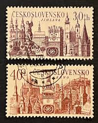 |
| eBay | S3 - Slovakia 20 Korun ND 1942 Uncirculated Banknote P. 7 Jan Holly *** SPECIMEN | eBay | 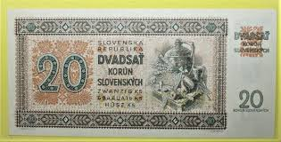 |
| eBay | 1943 Czechoslovakia Specimen 10 Korun | eBay | 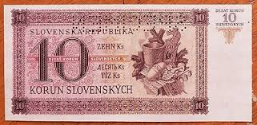 |
| Alamy | Soldier love letter hi-res stock photography and images - Alamy | 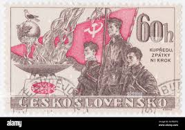 |
| PicClick | RARE CZECHOSLOVAKIA 2K Hradcany At Prague 1926 Stamp $200.00 - PicClick | 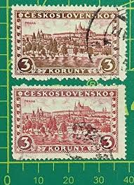 |
| RealBanknotes.com | Paper Money from Czechoslovakia | 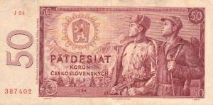 |
| eBay | Cancelled to Order/CTO Czech & Czechoslovakian Stamp Blocks for sale | eBay | 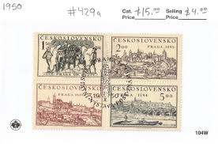 |
| eBay | S3 - Slovakia 20 Korun 1942 Uncirculated Banknote P. 7 - Jan Holly *** Beautiful | eBay | 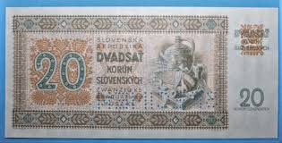 |
| Numizmatikas.lt | Slovakia 20 korun 1942. SPECIMEN. UNC. P-7a - Numizmatikas.lt | 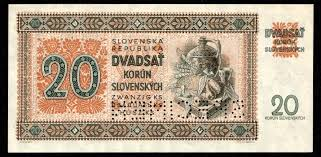 |
| Shutterstock | Czechoslovakia 1958 May 26 45 Haléř Stock Photo 2204508569 | Shutterstock | 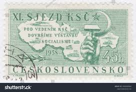 |
| eBay | CZECHOSLOVAKIA 1950 Block - National Stamp Exhibition - UNUSED | eBay | 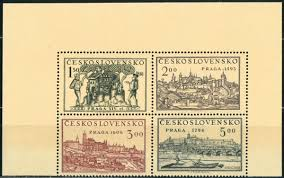 |
| | Katz Auction | Czech Republic 500 Korun 1973 - 1993 With Stamp | Katz Auction | 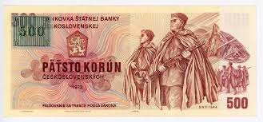 |
| eBay | SLOVAKIA 10 KORUN 20 7 1943 SPECIMEN P 6 UNC free shipping from 100$ | eBay | 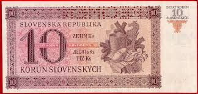 |
| Alamy | The *Hradcany 15N* stamp, designed by Alfons Mucha in 1918, features an iconic design with a non-perforated edge. It is part of a series of stamps representing significant landmarks in Prague, such | 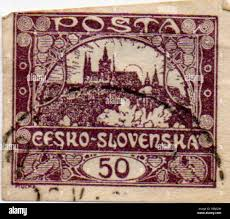 |
| eBay | CZECHOSLOVAKIA, 50 KORUN, P#90b, prefix J, (DRY PRINTING), 1964(1965) | eBay | 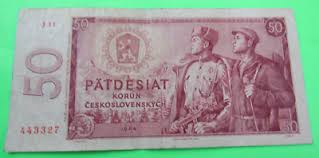 |
| Robert Škvařil (robertkvail) - Profile | Pinterest | 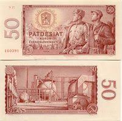 | |
| HipStamp | Czechoslovakia 1444 - used | Europe - Czech Republic, General Issue Stamp / HipStamp | 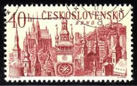 |
| Etsy | Czechoslovakia 1964 50 KORUN J 07 060251 - Etsy Ireland | 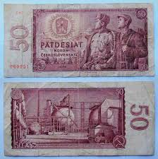 |
| Currency Banknotes.com | Czechoslovakia Korun Banknotes | 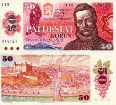 |
| YouTube | Gluck “Dance of the Blessed Spirits” Herbert von Karajan • Berliner Philharmoniker, 1983 - YouTube | 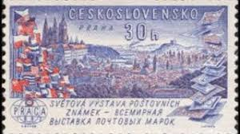 |
| Leftover Currency | 500 Czechoslovak Korun banknote 1973 (Devin Castle) - Exchange yours | 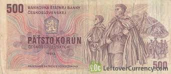 |
| | Katz Auction | Czech Republic 500 Korun 1993 | Katz Auction | 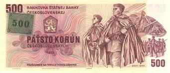 |
| CGB Numismatics | 20 Korun Spécimen SLOVAKIA 1942 P.07s b92_7533 Banknotes | 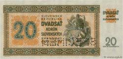 |
| eBay | Czech Famous Archtecture Jihlava stamp 1967 A-10 | eBay | 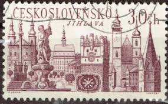 |
| eBay | Czechoslovakia, 1974 Partisan Commanders & Fighters, Scott 1925 // 1930, Used | eBay | 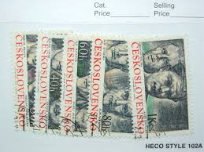 |
| | Katz Auction | Czechoslovakia 2 x 50/100 Korun 1969 Fantasy Banknotes | Katz Auction | 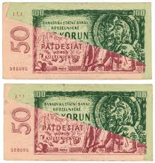 |
| eBay | CZECHOSLOVAKIA:1958 SC#854-55 MNH the National Archives Exhibition AL861 | eBay | 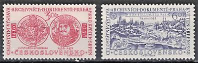 |
| eBay | CZECHOSLOVAKIA 500 KORUN 1973 | eBay | 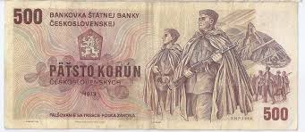 |
| eBay | CZECHOSLOVAKIA SCOTT #'s 854-855 SET, MINT, OG, NH, FRESH, GREAT PRICE! | eBay | 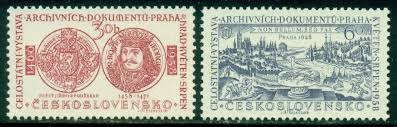 |
| Shutterstock | Gibraltar Circa 1983 Stamp Printed Gibraltar Stock Photo 2299620969 | Shutterstock | 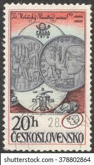 |
| eBay | Czechoslovakia #2579 Presidential Palace Gate 1985 First Day Issue Postmark NH | eBay | 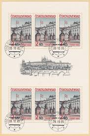 |
| eBay | Czechoslovakia Sc# 429a Block of 4 Used 1st Day Cancel | eBay | 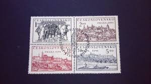 |
| Etsy | Vintage Czechoslovakia 10 Korun Banknote 1960 . Children. Dam Circulated but Almost New. Art.9275. Cm. 13,5x6,5. 62th Birthday - Etsy | 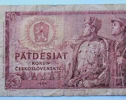 |
| Getty Images | 103 Korun Stock Photos, High-Res Pictures, and Images - Getty Images | |
| Numiz Numizmatika | 20 korun 1942 | |
| Burda Auction | Czechoslovakia 1953-1992 / Banknotes / Public Auction 76 | Burda Auction (Filatelie Burda) | |
| Shutterstock | 57 Hundred Czechoslovakia Crowns Royalty-Free Images, Stock Photos & Pictures | Shutterstock | |
| Shutterstock | 83 Czechoslovakia Legion Royalty-Free Images, Stock Photos & Pictures | Shutterstock | |
| Etsy | Czechoslovakia 1964 50 KORUN G 61 971633 - Etsy | |
| A small selection of notes from countries and places that no longer exist : r/Banknotes | ||
| Vaclav Smutny (vaclavsmutny) – Profile | Pinterest | ||
| SIA ''Doma Antikvariāts'' | New items : 50 Korun, Czechoslovakia, 1964 (1965) (VF), Pick 90d | |
| Numista | 100 Korun - Czechoslovakia – Numista | |
| eBay | Tschechoslowakei 1950 Satz 630/33 Praha 1950 Ausstellung postfrisch | eBay |